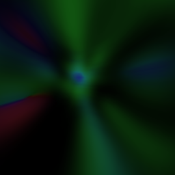
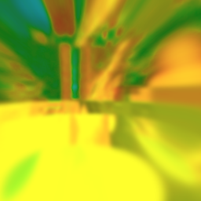
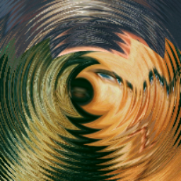
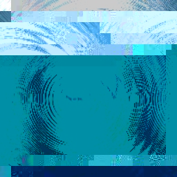
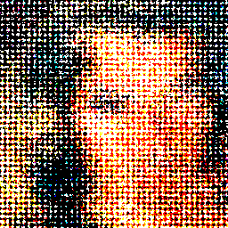
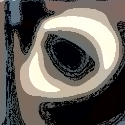
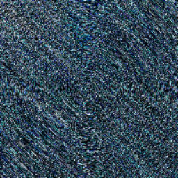
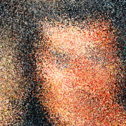

DeepFry.jl
DeepFry.jl is inspired by deepfried memes. Its superhero origin story was to automatically deepfry memes. On the way things happen and it became a chaotic image processing tool.
Every run is entirely random up to the AbstractRNG used.
Showcase
Here are some examples:
using TestImages, ImageShow, DeepFry, FileIO
img = testimage("fabio")
deepfry_img = deepfry(img)
deepfry_img = deepfry(img)
Temperature
You can also adjust the temperature, i.e. how many layers of processing happens:
using Random
for i in 1:6
deepfry_img = deepfry(img, temperature=i)
end┌ Warning: Assignment to `deepfry_img` in soft scope is ambiguous because a global variable by the same name exists: `deepfry_img` will be treated as a new local. Disambiguate by using `local deepfry_img` to suppress this warning or `global deepfry_img` to assign to the existing global variable.
└ @ index.md:36    
Animations
There is an integrated function to create a gif with different rendering everytime:
fastfood("deepfry.gif", img, 10)Corrupt JPEG data: 1583 extraneous bytes before marker 0xd9
Standard deepfrying
If you want something more "classical" there is also a function for that:
fry_img = fry(img)Corrupt JPEG data: 202 extraneous bytes before marker 0xd9API
DeepFry.add_noise — Methodadd_noise(img; rng::AbstractRNG=default_rng(), fill_noise=rand(rng, Beta(3, 10))add_noise adds noise to the image by randomly multiplying some pixel with a random value. The fill_noise parameter controls the probability of a pixel being affected by the noise.
DeepFry.deepfry — Methoddeepfry(
img::AbstractMatrix{T};
rng::AbstractRNG=GLOBAL_RNG, temperature::Integer=5, nostalgia::Bool=false, verbosity::Integer=0
) where {T<:Colorant}Take an image and apply a series of random filters to it.
Keyword arguments
rng: the random number generator seed to pass to the filters.temperature: (positive) number of layers of filters to apply.nostalgia: whentrue, save the image after each transformation and display a mosaicview containing each step.verbosity: control how much information is displayed- 0: No output.
- 1: Print out which frying is used.
- 2: Print also the timing of each frying and the total frying time.
DeepFry.fastfood — Methodfastfood(output::AbstractString, img::AbstractMatrix{<:Colorant}, nframes;
rng::AbstractRNG, temperature::Int=3)Build a gif in output from img by calling deepfry nframes times on img with the given temperature.
DeepFry.fry — Methodfry(img::AbstractMatrix{T}; rng::AbstractRNG) where {T<:Colorant}Frying using a sequence of predetermined layers. Look at DeepFry.STD_FRYING for more details.
DeepFry.jpeg_compression — Methodjpeg_compression(img; rng::AbstractRNG=default_rng(), quality::Integer=rand(rng, Poisson(15))Compress and decompress the image using the JPEG algorithm. The quality parameter controls the compression level, with higher values resulting in higher quality images.
DeepFry.nuke — Methodnuke(img::AbstractMatrix{T}; rng::AbstractRNG) where {T<:Colorant}Wrapper around deepfry, forcing a temperature of 10.
DeepFry.set_brightness — Methodset_brightness(img; rng::AbstractRNG=default_rng(), brightness=rand(rng) * 0.5)set_brightness adds a random brightness to the image. The brightness parameter controls the amount of brightness added to the image.
DeepFry.set_contrast — Methodset_contrast(img; rng::AbstractRNG=default_rng(), contrast=randexp(rng))set_contrast adds a random contrast to the image. The contrast parameter controls the amount of contrast added to the image.
DeepFry.sharpen — Methodsharpen(img; rng::AbstractRNG=default_rng(), scale=rand(rng, Beta(1.0, 20.0))sharpen sharpens the image by convolving it with a sharpening filter. The scale parameter controls the strength of the sharpening.